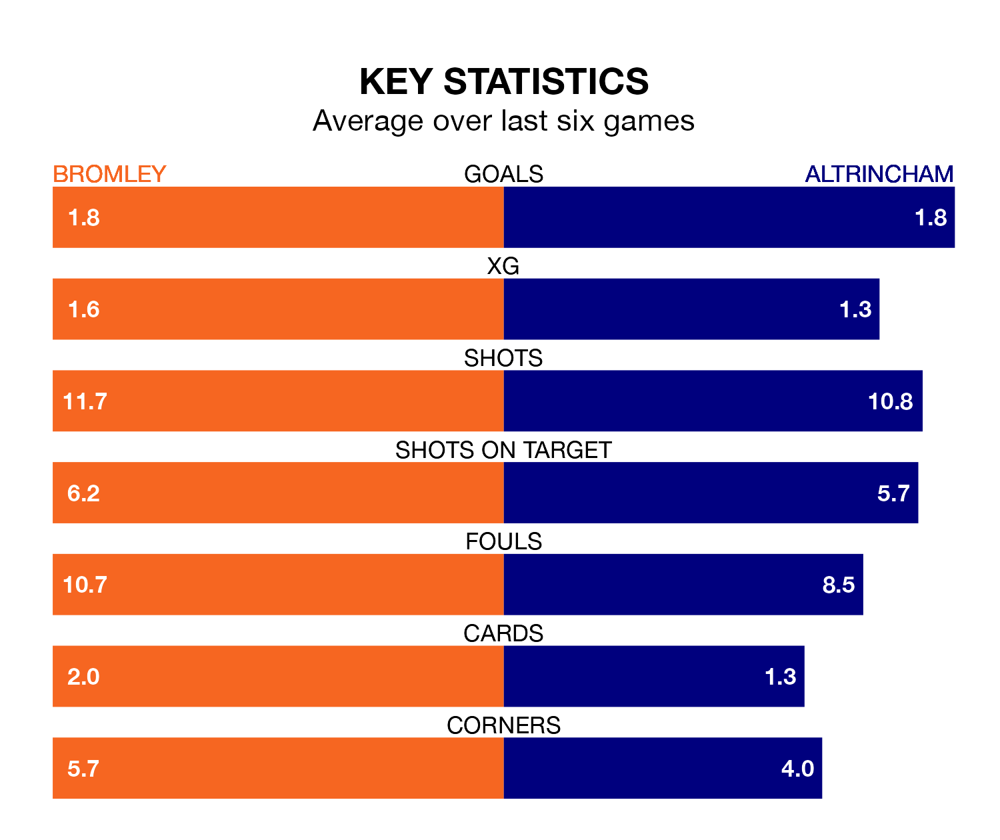

Bromley host Altrincham in Sunday's match looking to bounce back from defeat last time out in the National League.
The Ravens, who sit third in the league after 46 games, fell to a 2-1 away defeat to Gateshead on April 20.
They face an Altrincham side who picked up a win in their last match, a 1-0 victory against Oxford City, and who sit fifth in the table.
With 84 goals in 46 games so far this season, Altrincham are scoring more than average in the league with 1.8 goals per game. And they are conceding fewer than average, letting in 59 goals at a rate of 1.3 per game.
Bromley are also above average scorers, with 1.6 goals per game, compared to a league average of 1.5. They have conceded 1.1 goals per game.
The Ravens are in reasonable form in the National League, with three wins and two draws from their last six games.
With five wins and a draw over that period, Robins' form is better – they have taken 16 points from 18, compared to the hosts' 11.
In the last 10 years, Bromley and Altrincham have played each other on 10 occasions. Bromley won five of them, Altrincham one, and they drew four times.
On average, the Ravens scored 1.3 goals and Robins 0.9 in those matches.
Their last meeting was on December 23, when they played out a 2-2 draw.
Updated: 07:59 (UTC), 26/04/24